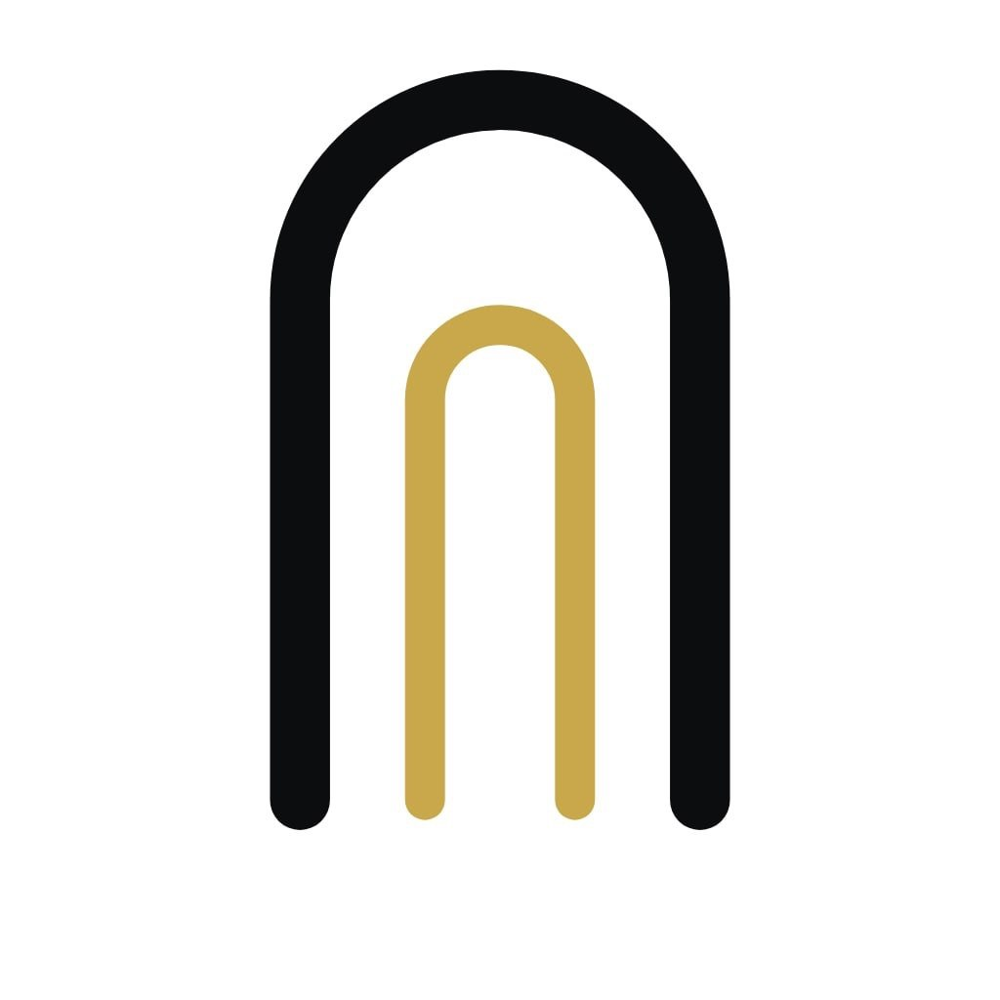
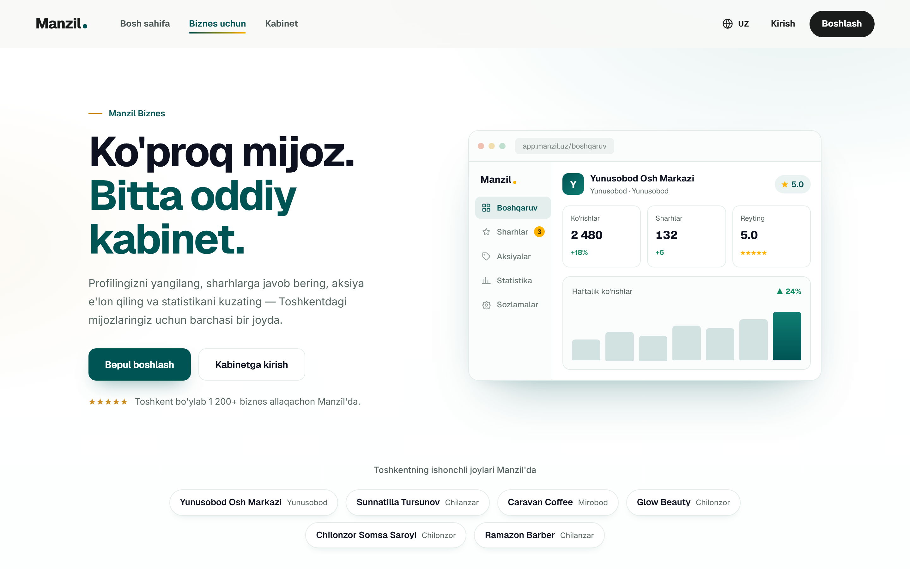
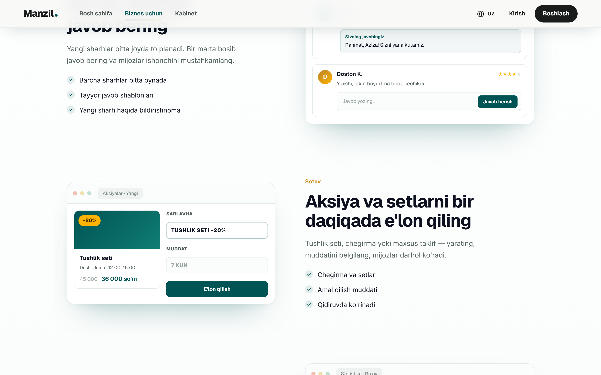
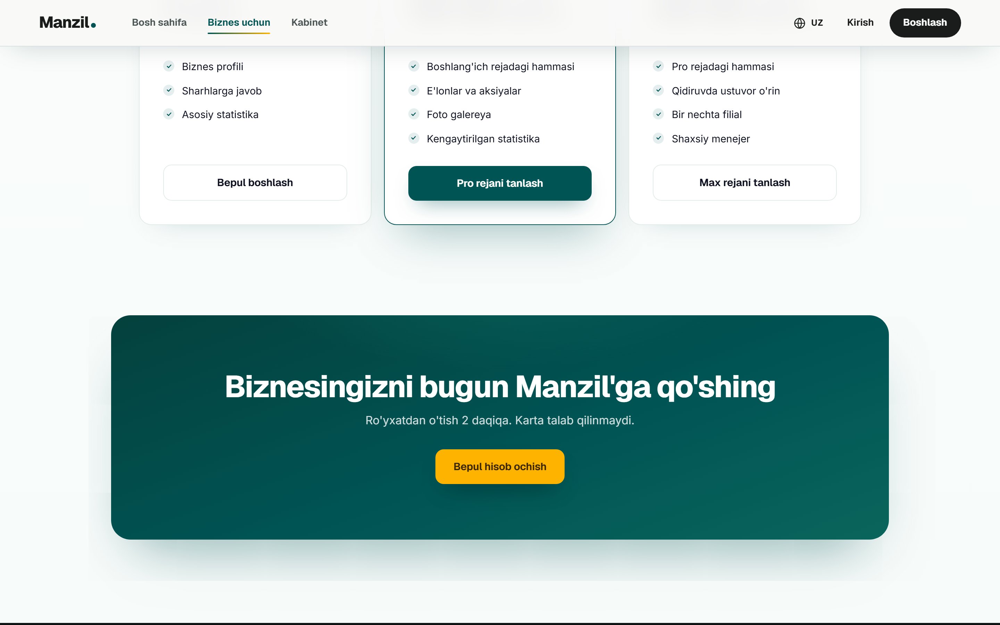
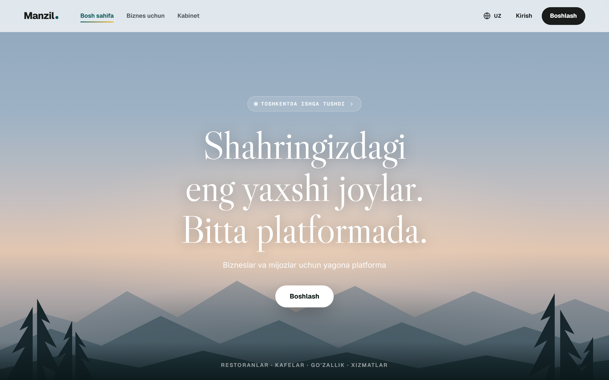
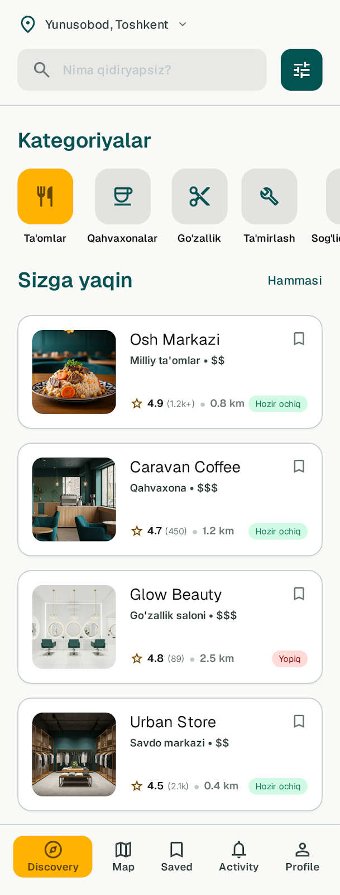
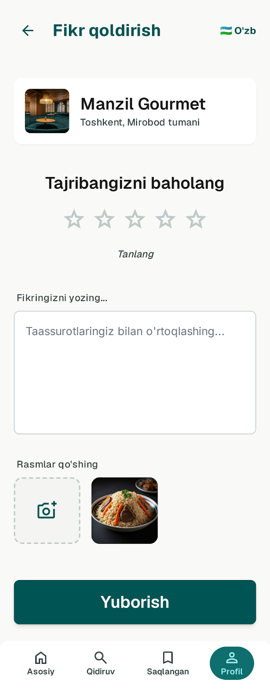
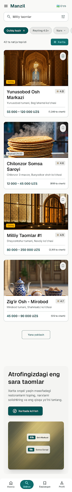

Master plan & investment memorandum: the trust layer for 37 million people's daily choices, and the operating system for the businesses that serve them. The Meituan playbook, at the scale one focused team can win.
Manzil — Master Plan
Manzil ("address" in Uzbek) is the trust layer for local life in Uzbekistan: consumers find and choose places through real reviews; businesses run their reputation, promotions, and customers from one paid dashboard. It is the Meituan/Dianping sequence (reviews first, transactions second, super-app last), executed in the youngest, fastest-digitizing market in Central Asia, where nobody yet owns the question "where should I go?"
The product today
The business-facing SaaS is live in production: claim flow, review inbox with owner replies, promotions, statistics, dynamic admin-set pricing, RBAC admin console, and a NestJS API on managed Postgres. Screenshots below are the real product, today.

manzil-business.vercel.app/uz/business. Merchant home: real dashboard, live data (Yunusobod Osh Markazi, ★5.0)

Review inbox: every review answerable in one click

Pricing: admin-set in the console, live in 60 seconds
The product today
The consumer surface runs trilingual (uz / ru / en) on web today. The iOS & Android apps are fully designed in the brand system (discovery, search, reviews, saved places) and are the first engineering milestone after this raise.

Consumer landing. Editorial brand: teal + gold, Samarkand arch motif, Libre Caslon display

Discovery: nearby, rated, open now

Reviews: the trust engine

Search: structured local answers
Vision
2031. A family in Yunusobod picks a birthday restaurant by rating and live promos, books a table, redeems a −20% set, and pays less than walk-ins. The owner sees the booking, the review that follows, and answers it before bed. A tourist in Samarkand does the same in English. A barber in Chilonzor wakes to a week of bookings that came from search. At peak, Manzil is:
5M+ monthly active users across every major Uzbek city, plus the Silk Road tourist corridor in three languages.
Listing, reputation, promotions, bookings, customer base, and statistics: the owner's single pane of glass.
Vouchers, deal-sets, and bookings redeemed in-store; take-rate and advertising out-earn subscriptions.
A review graph nobody can copy, protected by a structural rule: reviews are never removable for payment.
Benchmark
Meituan merged with Dianping, China's review platform, in 2015 and built the world's largest local-services company on one flywheel. At peak it passed a $200B market capitalization on ~770M annual transacting users; the in-store segment (reviews + vouchers, the Dianping half) is its profit engine. We are running the same sequence, sized for a market global giants ignore.
| Meituan / Dianping | Manzil | |
|---|---|---|
| Home market | China · 1.4B people | Uzbekistan · ~37M, youngest big market in the region |
| Entry wedge | Group-buy deals; Dianping reviews | Reviews + merchant SaaS, live today |
| Monetization order | Deals → ads → delivery → fintech | SaaS → vouchers/bookings → ads → fintech-adjacent |
| Delivery | Built own logistics (capital-heavy) | Partner-first: Yandex/Uzum already burn capital there; we own choice, not couriers |
| Merchant tie | Commission-led | Subscription-led (predictable), commission layered on |
| The lesson | Win frequency, monetize trust: imported unchanged, at winnable scale. | |
The O2O flywheel
Reviews create trust → trust concentrates demand → merchants pay to engage it → their offers deepen the habit that writes the next review.
Market & timing
Payments went normal (Payme/Click QR everywhere), smartphones saturated, the state pushes SME digitization and tourism, and the only global players in-market solve maps, not choice. Internal planning estimates:
Median age ≈ 29; internet penetration above 80% and climbing.
Payme / Click / Uzcard–Humo made QR at the till a habit; take-rate revenue needs no behavior change.
SME digitization programs + IT-Park tax incentives (apply to us directly) + a deliberate tourism boom on the Silk Road corridor.
| Player | Owns | Doesn't own |
|---|---|---|
| 2GIS / Google / Yandex Maps | "Where is it?" | "Is it good? Why this one?" |
| Uzum | E-commerce + fintech | Offline services relationship |
| Yandex Eats / Express24 | Food delivery logistics | In-store choice, non-food services |
| Instagram / Telegram | Attention | Structured, searchable, answerable trust |
| Manzil | The decision: reviews, comparison, deals, booking, and the merchant tools behind it. | |
Business model
The consumer side stays free forever; it is the audience merchants pay for. Monetization arrives in four waves, each building on the previous one's data and habit.
Free tier to claim & reply (the wedge) → Pro 399 000 UZS/mo (promotions, gallery, advanced stats) → Max 499 000 UZS/mo (search priority, multi-branch, dedicated manager). Pricing is admin-set data, repriceable without a deploy.
Vouchers, deal-sets, and bookings redeemed in-store; 5–10% take-rate on Payme/Click rails. The Dianping in-store model.
Clearly-labelled promoted placement in search and discovery. It never touches organic review ranking; that integrity is the asset being rented.
Payment-linked loyalty and cashback with existing rails. Optional; pursued only from profitability.
| CAC, paying merchant | ≤ $40 |
| Blended ARPU | ≈ $32/mo |
| Payback | < 2 months |
| Software gross margin | ≈ 90% |
| Logo churn guardrail | < 3%/mo |
Reviews never removable for payment: structural, in code, including from us.
Full data export at every tier: no hostage data; retention must be earned.
Natural currency hedge: UZS revenue against ~90% UZS costs; quarterly FX repricing.
Financial projections
Illustrative plan; assumptions: paying merchants 100 → 10 000 (EOY), blended ARPU $32/mo, 7% take on voucher/booking GMV from 2027, labelled advertising from 2028. FX 1 USD ≈ 13 000 UZS.
Revenue by stream, 2026–2030 (USD, thousands)
Stacked annual revenue · totals labelled
| USD, thousands | 2026 | 2027 | 2028 | 2029 | 2030 |
|---|---|---|---|---|---|
| Paying merchants (EOY) | 100 | 600 | 2 000 | 5 000 | 10 000 |
| Subscriptions | 19 | 134 | 499 | 1 344 | 2 880 |
| Transactions | — | 35 | 210 | 840 | 2 450 |
| Advertising | — | — | 50 | 250 | 700 |
| Revenue | 19 | 169 | 759 | 2 434 | 6 030 |
| Total costs | 117 | 365 | 790 | 1 600 | 2 750 |
| Net cash flow | −98 | −196 | −31 | +834 | +3 280 |
Cash flow & funding
Two views of the same plan: annual net cash flow, and the cumulative position. Operating breakeven crosses during 2028–29; from 2029 growth funds itself. Team costs assume Tashkent salaries (loaded avg $1.1–1.8k/mo).
Net cash flow by year (USD k)
Investment years vs. profit years
Cumulative cash position (USD k)
Trough −$325k in 2028 · positive mid-2029
| Round | When | Amount | Buys |
|---|---|---|---|
| Pre-seed | 2026 H2 | ~$200k | Mobile apps shipped, Payme billing live, first sales pod, 12–15 months runway |
| Seed | 2027 | $1–1.5M | Transaction layer at scale, 3 new cities, team → 15 |
| Series A | 2029 · optional | for speed | Model self-funds from 2029; a raise accelerates national coverage & fintech, it does not rescue |
Ownership
Today the founder holds 100%. The target structure below reserves real equity for a technical co-founder and a meaningful ESOP, because the plan needs builders more than it needs control.
Target ownership · post pre-seed
illustrative; final terms at signing
| Holder | Post pre-seed | Indicative post-seed |
|---|---|---|
| Founder & CEO | 62% | ~47% |
| Co-founder CTO | 16% | ~12% |
| Founding team | 2% | ~1.5% |
| ESOP | 10% | ~12% |
| Pre-seed investors | 10% | ~7.5% |
| Seed investors | — | ~20% |
Competitive structure
The structural read of Uzbekistan's local-services O2O market, and where the profit pool defends itself.
The empty Dianping seat: trusted choice + merchant relationship. Moat = review graph, seeded density, doorstep relationships.
Code is cheap to copy; the review graph and merchant relationships are not. Global players deprioritize a 37M market; that is the window.
Cloud is commodity. Payment rails are few (Payme / Click / Uzcard); we integrate multiple rails from day one.
Free product, zero switching cost. Counter: review depth nobody else has, deals nobody else aggregates.
Price-sensitive SMEs. The free tier removes resistance; public reviews create the need to engage.
Telegram groups, Instagram, word of mouth: unstructured, unsearchable, unanswerable. We formalize what people already do.
2GIS/Yandex own maps-utility; Uzum owns e-commerce. Nobody owns reviews-and-relationship for service SMEs.
Position
A strategy document that hides its weaknesses is a sales document. Ours are listed, and each maps to a mitigation on the next page.
Execution honesty
Every platform business dies or lives on the same seven problems. Here is our answer to each, most already running in production.
| Challenge | How we overcome it |
|---|---|
| Chicken-and-egg | Supply first, district by district. Listings are pre-seeded, so the pitch is "claim your page," not "join another platform." Win Chilonzor completely before the next district; a consumer must always see a full map. |
| Trust & review fraud | Verified accounts; moderation queue with a full audit trail (built); rate-anomaly detection (planned); and the structural rule of no removal for payment, including from us. Trust is the product; it gets engineering budget. |
| SME digital literacy | Meet owners in Telegram: claim flow, notifications, and the CRM bot live where they already work. Doorstep onboarding closes what apps can't. |
| Monetization timing | Free until their customers create the pull; a public review demands a reply. Upsell on evidence: weekly stats screenshots, not promises. |
| Big-player entry | Speed and depth: own the review graph and merchant relationships before the market is worth a giant's attention. Partner for delivery instead of fighting logistics wars we can't fund. |
| Talent | Meaningful equity (ESOP 10%+), IT-Park tax regime, and a mission an engineer can see live in their own city. The CTO offer is 16%: a founder's seat, not a job. |
| Capital scarcity | Small raises against visible unit economics (≤ $40 CAC, < 2-month payback) and designed breakeven in 2028–29: fundable in any climate, sovereign if funding vanishes. |
Goals
Tracked as OKRs in the company repository and reviewed monthly. Dates are commitments to sequence, not prophecy.
≥ 300 in Chilonzor first; density before breadth.
≥ 20% on Max; upsell only on evidence.
< 2% moderation-removal rate; trust holds.
The three product keys to 2027's transaction layer.
This document is the pitch for both.
Vouchers & bookings on Payme rails; 600 paying; Samarkand + 2 cities; seed round; team → 15.
2 000 paying; advertising launches; subscriptions fall below 70% of revenue; the platform effect shows.
5 000 paying; tourist vertical live on the Silk Road corridor; Series A optional, for speed only.
10k+ paying merchants, 5M+ MAU, every major city; evaluate one adjacent market only after Uzbekistan is clearly won.
The people
Manzil today is one founder and a shipped platform. The plan needs three more owners before it needs anything else.
~$200 000 for 10% (target structure, p. 11). It buys: mobile apps shipped, Payme billing live, the first sales pod, and 12–15 months of runway to the metrics that price the seed: 1 000 claimed · 100 paying · 10k MAU. Peak capital need to breakeven is ≈ $325k. This is a plan that intends to owe you profits, not apologies.
Manzil — the address of local life.
manzil-business.vercel.app · Tashkent, Uzbekistan · July 2026